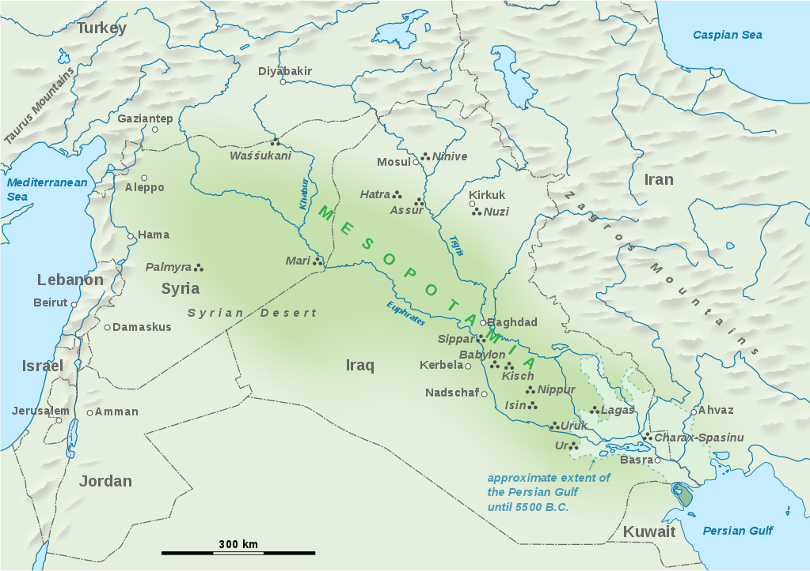
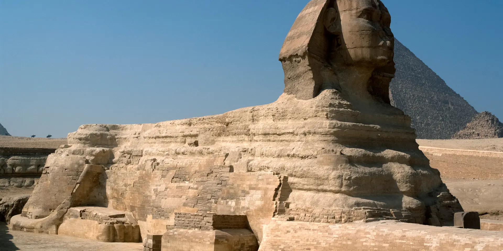

Mesopotamia is a region of southwest Asia in the Tigris and Euphrates river system that benefitted from the area’s climate and geography to host the beginnings of human civilization. Its history is marked by many important inventions that changed the world, including the concept of time, math, the wheel, sailboats, maps and writing. Mesopotamia is also defined by a changing succession of ruling bodies from different areas and cities that seized control over a period of thousands of years.

Sumer was an ancient civilization founded in the Mesopotamia region of the Fertile Crescent situated between the Tigris and Euphrates rivers. Known for their innovations in language, governance, architecture and more, Sumerians are considered the creators of civilization as modern humans understand it. Their control of the region lasted for short of 2,000 years before the Babylonians took charge in 2004 B.C.

Ancient Egypt was the preeminent civilization in the Mediterranean world for almost 30 centuries—from its unification around 3100 B.C. to its conquest by Alexander the Great in 332 B.C. From the great pyramids of the Old Kingdom through the military conquests of the New Kingdom, Egypt’s majesty has long entranced archaeologists and historians and created a vibrant field of study all its own: Egyptology. The main sources of information about ancient Egypt are the many monuments, objects and artifacts that have been recovered from archaeological sites, covered with hieroglyphs that have only recently been deciphered. The picture that emerges is of a culture with few equals in the beauty of its art, the accomplishment of its architecture or the richness of its religious traditions.